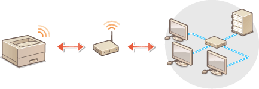
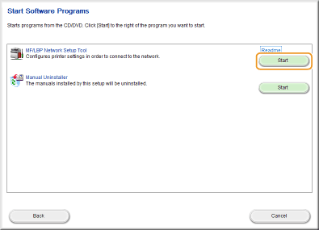
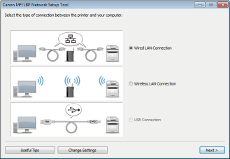
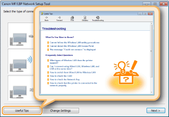

Connecting to a Wireless LAN
Wireless routers (or access points) connect the machine to a computer via radio waves. If your wireless router is equipped with Wi-Fi Protected Setup (WPS), you can configure your network with a simple button push. If your networking devices do not support automatic configuration, or if you want to specify authentication and encryption settings in detail, you need to set up the connection manually. To make wireless settings for this machine, use the MF/LBP Network Setup Tool from your computer. Make sure that your computer is correctly connected to the network.

|
|
Log on as an administratorTo perform the following procedure, log on to your computer with an administrator account.
Risk of information leakUse wireless LAN connection at your own discretion and at your own risk. If the machine is connected to an unsecured network, your personal information might be leaked to a third party because radio waves used in wireless communication can go anywhere nearby, even beyond walls.
Wireless LAN security standardsThis machine supports the following wireless LAN security standards. For the wireless security compatibility of your wireless router, see the instruction manual or contact the manufacturer.
128 (104)/64 (40) bit WEP
WPA-PSK (TKIP/AES-CCMP)
WPA2-PSK (TKIP/AES-CCMP)
|
 |
|
The machine does not come with a wireless router. Have the router ready as necessary.
The wireless router must conform to the IEEE 802.11b/g/n standards and be able to communicate in the 2.4 GHz band. For more information, see the instruction manual for your wireless router or contact the manufacturer.
Wired LAN and wireless LAN cannot be used at the same time. When using a wireless LAN connection, do not connect a LAN cable to the machine. Doing so may cause a malfunction.
If you are using the machine in your office, consult your network administrator.
|
1
Insert the User Software CD-ROM/DVD-ROM into the drive on the computer.
2
Click [Start Software Programs].


If the above screen does not appear Displaying the [CD-ROM/DVD-ROM Setup] Screen
If [AutoPlay] is displayed, click [Run MInst.exe].
3
Click [Start] for [MF/LBP Network Setup Tool].

4
Follow the on-screen instructions to configure the wireless LAN settings.

If there is something you do not understand
Click [Useful Tips] at the bottom left of the screen to display troubleshooting tips.

|
|
After switching the connection method from wired LAN to wireless LANYou need to uninstall the currently installed printer driver, and then reinstall it (Printer Driver Installation Guide).
|